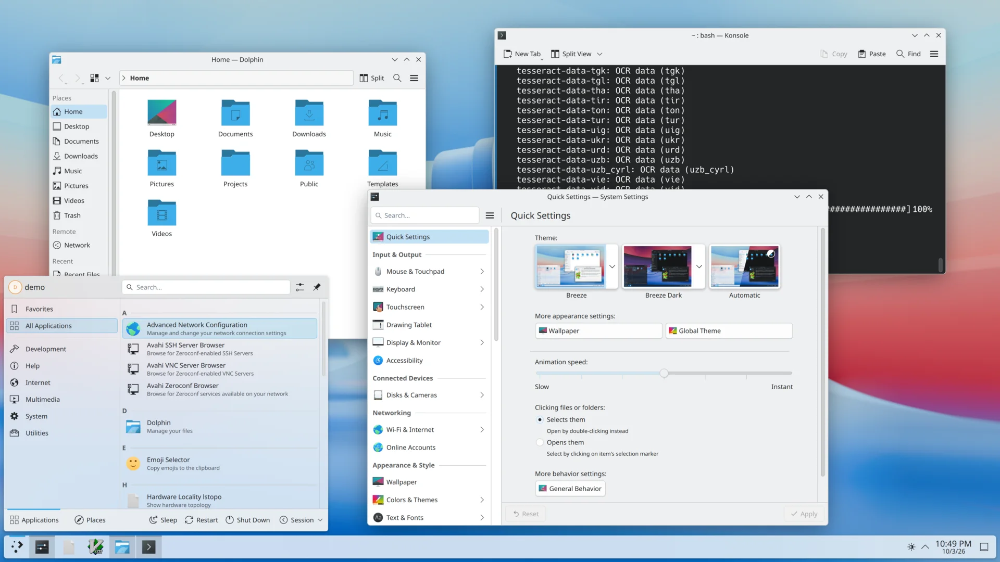
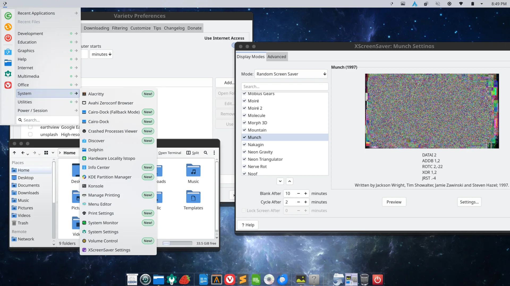

✓ Supported
- Pure Arch Linux installed manually or with archinstall
- An existing KDE Plasma desktop, or a minimal Arch system being prepared for Plasma
- x86_64 computers using official Arch repositories
Bring the MYLASTARCH Plasma layout, Cairo-Dock, visual identity, applications, and desktop defaults to a KDE system you already installed.
The converter expects Arch Linux repositories, package names, and Plasma configuration. It checks the system before making changes.
Beta software: Back up important personal files first. The converter makes its own configuration backup, but that is not a replacement for a full system backup.
The script installs the pieces and applies the same reusable configuration used by MYLASTARCH.
Adds the MYLASTARCH top panel, application menu, desktop defaults, splash screen, wallpaper, icons, and cursors.
Installs and configures Cairo-Dock, starts it with the desktop, and disables competing Plank autostart entries.
Applies practical file-manager defaults, including the full-width status bar and network-share support.
Adds a visible update tool for routine Arch maintenance, supplied as a signed package through the MYLASTARCH repository.
Installs XScreenSaver, its menu entry and autostart configuration, together with the MYLASTARCH image folder.
Adds the selected audio, Bluetooth, printing, mDNS, SMB, theme, browser, mail, and multimedia components while preserving a recognized existing office suite.
Your account and personal files remain in place. The converter does not rename the operating system, create a demonstration account, or replace your bootloader theme.
/var/backups/mylastarch-converter/Before installation, the menu explains each source and prints the package choices in color so you can review them.
Plasma, Dolphin, Konsole, Kate, Cairo-Dock, Papirus, PipeWire, Bluetooth, printing, SMB, Thunderbird, Vivaldi, Strawberry, Variety, XScreenSaver, and supporting packages. LibreOffice Fresh is added only when a recognized office suite is not already installed.
Used to install packages such as Arch Update and Sublime Text. The recommended menu choice removes the MYLASTARCH repository from pacman after installation.
You can install yay-bin for AUR-aware updates and fallback package access, or decline it. The menu explains what will be unavailable before you decide.

A representative clean Plasma installation. Your starting desktop may look different if you have already customized it.

The same kind of Arch KDE installation after conversion, with the MYLASTARCH layout, styling, tools, and applications.
Start with a current pure Arch installation and protect any irreplaceable personal files.
Keep the converter folder intact so the script can find all reusable MYLASTARCH assets.
Choose the target user, display-manager behavior, temporary repository option, and optional Yay support.
Log out or reboot to load the Plasma layout and autostart applications, then run the included validator if anything looks wrong.
Open a terminal in the folder containing the downloaded archive, then run:
tar -xzf MyLastArch-KDE-Converter.tar.gz
cd MyLastArch-KDE-Converter
sudo ./tools/convert-to-mylastarch/convert-to-mylastarch.shThe script opens its numbered menu and asks which existing desktop user to configure. Do not move the script out of the extracted folder; it needs the included configuration and artwork files.
sha256sum -c MyLastArch-KDE-Converter.tar.gz.sha256A successful check reports MyLastArch-KDE-Converter.tar.gz: OK.
Download the complete converter archive, verify its checksum, extract it, and start the guided menu from a terminal.